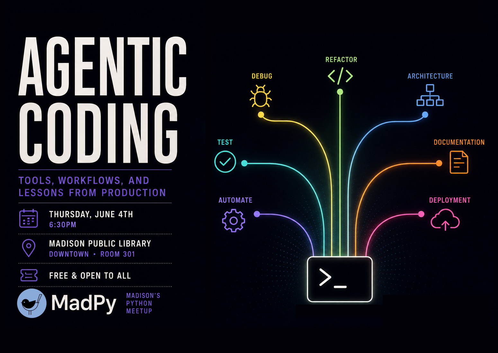

Everyone's heard the hype. AI writes your code now. Just ask it and ship it, right?
Reality is messier. The tools are powerful, but knowing how to actually steer them toward production-quality output is a skill. Building that skill is challenging when most demos are polished and most workflows are vague.
This month, we're getting concrete. Marcus Meier will walk through a live coding session using Claude Code, showing how a working engineer uses agentic coding day-to-day: how to prompt effectively, how to structure workflows, and how to leverage tools like CLAUDE.md, slash commands, and skills to keep the model on track.
Marcus is a Software Engineer and Systems Architect working at Grow Therapy, and he previously worked at a Madison-Based startup Fetch. Both companies recently with through AI-First/AI-Native transformations putting AI in the forefront of their workflows. He's had a front-row seat at how start-ups are trying to leverage agentic coding system, and other agentic workflows at scale in production environments.